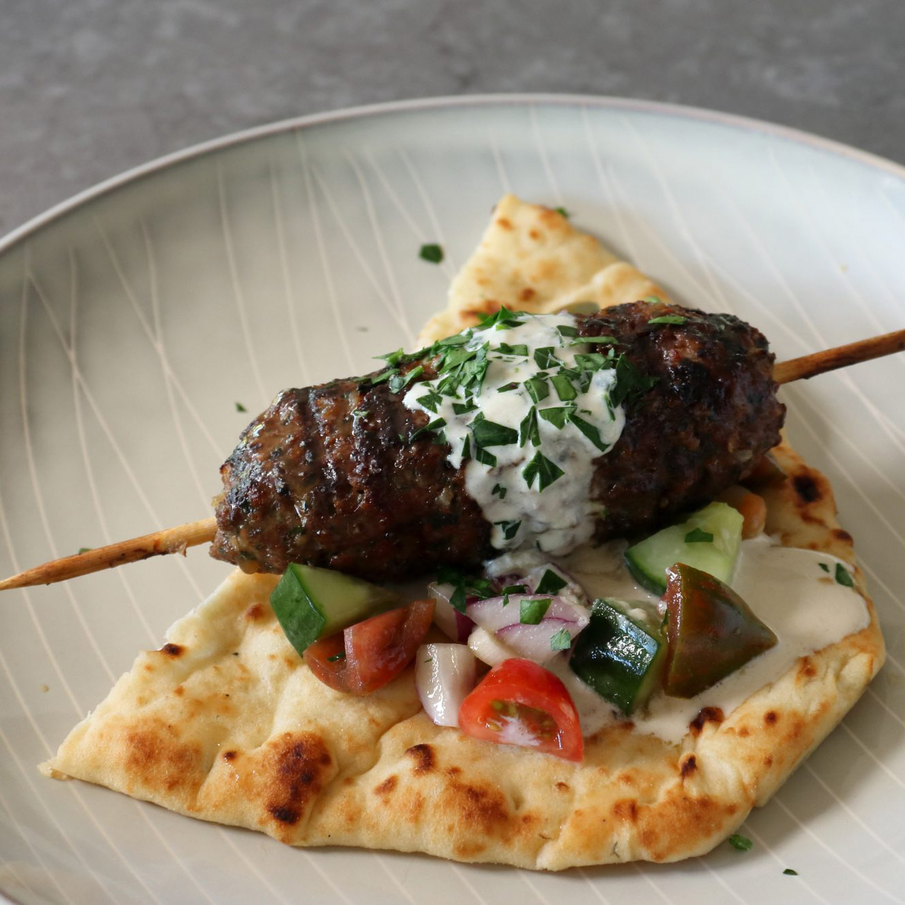

Kebab Recipe
The Famous Chef John's Kofta Kebabs
Mediterranean-style meatball on a stick. I know "shish" gets more love, but "kofta" might be the best kebab. Serve over a tomato, onion, and cucumber salad with flatbread or pita and a lemony tahini dressing.
Kebab Ingredients
- ⅓ cup chopped Italian parsley
- 4 cloves garlic, minced
- 4 ounces ground lamb
- 1 ¼ teaspoons kosher salt
- ½ teaspoon freshly ground black pepper
- ½ teaspoon ground allspice
- ¼ teaspoon ground cardamom
- ⅛ teaspoon ground nutmeg
- ¼ teaspoon cayenne pepper
- 4 bamboo skewers, soaked for at least 1 hour
Steps to make Kebab
- Cut toasted bread slice into thin strips on a cutting board; cut strips across into a small dice.
- Place onion, parsley, and garlic on top of diced bread on the cutting board; chop until mixture resembles tabbouleh.
- Season beef and lamb with kosher salt, black pepper, allspice, paprika, cardamom, nutmeg, and cayenne.
- Wrap in plastic wrap and refrigerate until chilled, at least 1 hour, up to overnight.
- Remove meat from the refrigerator and roll ¼ of the mixture into a ball using wet hands.
- Meanwhile, preheat a charcoal grill until coals are very hot.
- Place kebabs on the hot grill until browned and cooked through, about 12 minutes, turning every 3 minutes or so.